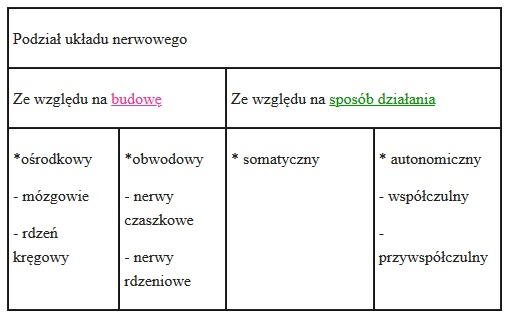

Klasa 7A
wychowawca Ewa Lipińska-Krzemianowskachemia
muzyka
WOS
j.polski
Klasa 7A
JĘZYK POLSKI
Temat: Czytanie ze zrozumieniem- test
Karta pracy ucznia
- Przeczytaj uważnie tekst Anny Dzikowskiej Wielkanoc jak to było kiedyś.
- Na podstawie tekstu odpowiedz pełnym zdaniem na poniższe pytania:
a) Z czego robiono wielkanocne baranki?
.....................................................................................................................................................
b) Z czego składało się święcone?
.....................................................................................................................................................
c) Jakie baby królowały na stołach?
.....................................................................................................................................................
d) Których ciast oprócz bab nie mogło zabraknąć na wielkanocnym stole?
.....................................................................................................................................................
Wielkanoc jak to było kiedyś
Świąteczna uczta była nagrodą za trwający czterdzieści dni i rygorystycznie przestrzegany post. Dwa dni przed jego zakończeniem wieszano śledzia na drzewie, aby ukarać go za to, że przez 6 tygodni zastępował on mięso. Urządzano także pogrzeby postnemu żurowi, którego w dawnych czasach jedzono prawie codziennie.
W Wielką Sobotę chodzono poświęcić jedzenie. W niedzielny poranek obowiązkowe było uczestnictwo w uroczystej rezurekcji, która trwała 3 godziny. Śniadanie rozpoczynało się od podzielenia się poświęconym jajkiem. W niektórych regionach kraju, przed przystąpieniem do śniadania, każdy musiał zjeść laskę chrzanu. Dzięki temu przez cały rok nie cierpiał na ból brzucha, na katar, kaszel czy ból zębów. Dużą uwagę przywiązywano do wyglądu stołów. Przystrajano je bukiecikami z bukszpanu i barwinku. Na środku stołu zawsze stał baranek. Robiono go z wosku, masła, ciasta lub marcepanu. Wokół niego ustawiano misy z jajkami, mięsem, tace z ciastami.
Jak nakazywała tradycja, święcone składało się z dań zimnych, przede wszystkim mięs, jaj na twardo i ciast. Najważniejsza była szynka uwędzona na jałowcowym dymie. N stole nie mogło też zabraknąć kiełbas, zwłaszcza białej.
Wśród ciast królowały baby puchowe, koronkowe, muślinowe, parzone, kołysane, a także serniki i oczywiście mazurki. Było też pełno różnych placków, kołaczy, jajeczników.
Dzisiejsze śniadania wielkanocne nie są już tak wystawne jak kiedyś, jednak niektóre tradycje przetrwały. Staropolskim zwyczajem dzielimy się jajkiem, składając sobie życzenia. Na stołach nadal króluje baranek z cukru lub ciasta. Mamy także przepyszne baby i mazurki, oraz przede wszystkim jajka podawane na różne sposoby.
Życzę zdrowych , pełnych miłości Świąt Wielkanocnych
pani Beata
Klasa 7A
Chemia
Temat: Stężenie procentowe roztworu - c.d
Zapisz do zeszytu i rozwiąż 3 zadania.
1. Jakie jest stężenie procentowe roztworu jeżeli ms=50 g a mr-ru=100 g. Podstaw do wzoru i oblicz.
2. Jakie jest stężenie procentowe roztworu jeżeli ms=10 g a mr-ru=100g. Podstaw do wzoru i oblicz.
3. Jakie jest stężenie procentowe roztworu jeżeli ms=20g a mr-ru=100g. Podstaw do wzoru i oblicz.
Muzyka Kl.VII
Przepisz lekcję do zeszytu. Wykonaj zadanie i prześlij na adres e-mail : muzykamg@wp.pl
Temat:Muzyka wokalna i wokalno-instrumentalna.
1.Wielogłosowa muzyka wokalna
Madrygały- utwory na kilka głosów, układane przez renesansowych kompozytorów do najwybitniejszej poezji, wykonywane były przez kilkuosobowe grupy śpiewaków na dworach możnych.
Posłuchaj przykład madrygału:
https://www.youtube.com/watch?v=d0VG8xPfwg8
2. Podstawowe głosy ludzkie (utrwalenie)
sopran- wysoki głos kobiecy
alt- niski głos kobiecy
tenor- wysoki głos męski
bas- niski głos męski
3.Aparat wykonawczy - różne rodzaje chórów.
Chór- zespół osób wykonująch wspólnie utwory wokalne.W zależności od składu może być mieszany, żeński, męski, dziecięcy itp.; w zależności od utworów, które wykonuje- może śpiewać wielogłosowo lub jednogłosowo.
Chórmistrz- dyrygent chóru
Zadanie:Napisz krótką notatkę o Henryku Mikołaju Góreckim jednym z najwybitniejszych współczesnych kompozytorów polskich.
np. https://pl.wikipedia.org/wiki/Henryk_Miko%C5%82aj_G%C3%B3recki
matematyka
fizyka
plastyka
PLASTYKA - KLASA 7
TEMAT 2 : PROJEKT RYSUNKOWY DEKORACJI ŚWIATECZNEJ
/kompozycja/
Do wykonania pracy będzie potrzebna : kartka papieru z bloku rysunkowego lub technicznego ołówek, kolorowe pisaki lub kredki.
Zaprojektuj element świątecznej dekoracji wielkanocnej.
Pomyśl jakie są typowe elementy dekoracji, które kojarzą się nam
ze świętami wielkanocnymi. Może to być np. pisanki, koszyk wielkanocny,
królik czy kurczaczek albo palma wielkanocna.
Narysuj wybrany element dekoracji i pokoloruj go.
Może to być także forma karki świątecznej
Jeśli masz trudności w wyborze możesz obejrzeć te filmy
https://www.youtube.com/watch?v=9wTwA9e8n1s
https://www.youtube.com/watch?v=wd1I38Floso
https://www.youtube.com/watch?v=rPY-saDUps4
Zatrzymajcie prace do oceny, możecie też zrobić jej zdjęcie.
Kl 7a - fizyka Temat : Siła oporu powietrza i siła tarcia.
zapisz do zeszytu:
Powietrze, które nas otacza, powoduje opór dla ciał, które spadają i które się w nim poruszają. Im większa jest prędkość ciała tym większy jest opór powietrza. Opór powietrza zależy także od kształtu ciała.
Tarcie to siła występująca podczas przesuwania się jednego ciała po drugim. Wartość tej siły nie zależy od pola powierzchni styku tych ciał ale zależy od wartości siły dociskającej te ciała do siebie i od rodzaju powierzchni ciał trących o siebie.
zad.1.
obejrzyj film https://www.youtube.com/watch?v=wdUXSPnGMDs&t=335s
odpowiedz krótko:
Dlaczego w zimie posypuje się chodniki piaskiem?
Dlaczego w samochodach stosuje się smary w łożyskach?
zad.2.
Obejrzyj film https://www.youtube.com/watch?v=axGnQ0D6ycs
Wykonaj doświadczenie z filmiku z wykorzystaniem dłoni i wody.
Zastanów się czy opór w wodzie występuje tak samo jak w powietrzu?
Kl.7a -matematyka Temat; Przekształcanie wzorów
zapisz do zeszytu:i zapamiętaj:
Wzory rozwiązuje się jak równania należy zaznaczyć niewiadomą do obliczenia ,a resztę liter występujących we wzorze traktować jak liczby (wiadome). W rozwiązaniu stosujemy działania przeciwne + i - , * i :
Co jest niewiadomą określa polecenie w zadaniu. np.: wyznacz x ze wzoru
a) x + 3k = m / - 3k musimy odjąć bo jest +
Ą-3k Ą-3k
x = m-3k
wyznaczyliśmy x i koniec. m-3k to nie są wyrazy podobne więc tak musi zostać.
b) 7m x = z / : 7m musimy podzielić bo jest pomnożone
x = z : 7m
wyznaczyliśmy x i koniec .
zad.
Obejrzyj film https://www.youtube.com/watch?v=zXk4QJGImQs
przepisz do zeszytu występujące w filmie przykłady: a, b, c, d, e z rozwiązaniami.
język polski
historia
biologia
JĘZYK POLSKI-KL.7A
TEMAT: Tradycje i zwyczaje wielkanocne
Procesje z palmami odbywają się na pamiątkę wjazdu Jezusa do Jerozolimy, kiedy to czekający lud witał go z palmami w rękach. Zajączek wielkanocny w Niedzielę Wielkanocną po uroczystej mszy dzieci szukały zajączka, czyli gniazdka z barwnymi jajkami i słodyczami, schowanego w ogrodzie, obejściu lub w domu.
Święcenie palm poświęcona w kościele palma chroniła dom od pożarów, piorunów i wszelkiego zła.
Przywoływki to zwyczaj kujawski polegający na głośnym oznajmianiu, jakie wady bądź zalety mają panny na wydaniu oraz ile w Poniedziałek Wielkanocny na każdą z nich wyleją wiader wody.
Palmowy Jezusek - to drewniana figurka Jezusa siedzącego na osiołku.
Turki wielkanocne - to niezwykle atrakcyjne i barwne straże grobowe, znane zwłaszcza w województwie podkarpackim.
Wielkanocne misteria - to inscenizacje religijne, przedstawiające ostatnie dni życia Chrystusa.
Bziuki wielkanocne ogromne płomienie ognia, które oświetlają drogę procesji rezurekcyjnej.
Pucheroki - to przebrani chłopcy, którzy w Niedzielę Palmową śpiewem i żartem wypraszają datki.
Siuda-baba w okolicach Krakowa grasują młodzi mężczyźni przebrani za umorusane sadzą kobiety, zaczepiają przechodniów, ściskają ich i całują, aby w ten sposób wymusić świąteczne datki.
Judaszki to wieszanie, palenie i topienie kukły Judasza.
Pogrzeb żuru i śledzia polegał na wieszaniu i zakopywaniu tych potraw za to, że w czasie postu głodziły ludzkie żołądki.
Chodzenie z kurkiem dyngusowym to zwyczaj obchodzenia wsi, a zwłaszcza gdzie mieszkają młode panny. Młodzi chłopcy ciągnęli za sobą wózek pomalowany na czerwono, udekorowany kolorowymi wstążkami. Do wózka przywiązany był żywy kogut.
Emaus polski Emaus to krakowski zwyczaj uroczystego spaceru mieszczan, urządzany w drugim dniu świąt wielkanocnych na pamiątkę objawienia się Chrystusa uczniom będącym w drodze do Emaus.
Święcenie pokarmów odbywa się w Wielką Sobotę. Poświęcone potrawy nabierają magicznych właściwości, gwarantujących zdrowie, dostatek i ochronę przed złem.
Rękawka pierwotnie nazwa kopca Kraka (założyciela miasta Krakowa), zwyczaj polegający na zrzucaniu jadła z kopca, obecnie festyn ludowy.
Zadania dla ucznia:
1.Przepisz temat do zeszytu.
2.Przeczytaj tekst.
3. 3.Wybierz zwyczaje wielkanocne , których nie znaliście i wpiszcie je do zeszytu (trzy przykłady).
Historia klasa VII A
TEMAT: Powtórzenie wiadomości.
W ramach powtórzenia proszę obejrzyjcie film.
https://www.cda.pl/video/282784683
Biologia kl. VII
Podręcznik z biologii Puls Życia kl. 7 dostępny na stronie - https://www.nowaera.pl/naukazdalna
Lekcja
Temat : Budowa układu nerwowego (str. 173)
Przepisz notatkę
Układ nerwowy pełni następujące FUNKCJE:
- ODBIERA informacje z zewnątrz i z wnętrza organizmu ,
- REAGUJE na te informacje ,
- REGULUJE i KOORDYNUJE pracę wszystkich narządów i układów .
Obejrzyj filmik : https://www.youtube.com/watch?v=Xd0-u00gxEc

zad. 1 Uzupełnij zdania wyrazami:
CHRONIĄ, ODRUCHY
............... wrodzone lub wyuczone , bardzo szybkie , niemal natychmiastowe reakcje układu nerwowego na bodźce płynące ze środowiska . Czynności te .............. nas przed niebezpieczeństwem .